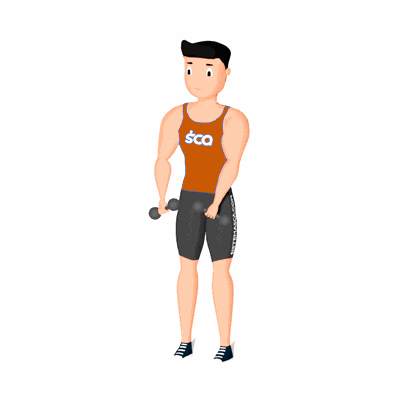

Rotação de Ombros Frente/Atrás com Halter

O exercício tem como objetivo o fortalecimento e alongamento dos músculos do ombro, com enfoque nos Deltoides.
Ficha Técnica
Tipo: Funcional
Grupo Muscular: Ombro
Aparelho: Nenhum
Músculos: Nenhum
Como realizar
- Em pé com as pernas abertas na largura do ombros;
- Segure um halter em cada mão e mantenha a coluna reta;
- Inicie o movimento rotacionando os ombros para frente;
- Rotacione até os braços chegarem a posição inicial e agora rotacione os ombros para atrás;
- Rotacione até os braços chegarem a posição inicial e repita os movimentos sempre invertendo a direção.
 RC STORE
RC STORE